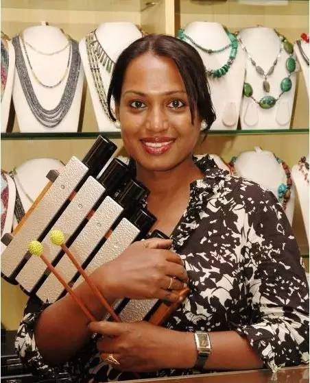

访谈Kalki: 印度第一位跨性别企业家
Kalki Subramaniam是一个记者、作家、演员和社会活动家。她拥有两个硕士学位，分别是新闻学和大众传媒&国际关系学。现在，她成了一位企业家。她还是一个跨性别者。她说，这使她成为印度第一位跨性别企业家。

——在这个访谈中，Kalki论起她是如何从一个在学校被性骚扰的小孩成长为一位成功的社会活动家和企业家的经历。
童年
我来自印度波拉契的一个中产阶级家庭，可以算是书香门第。但是我的童年经历却十分坎坷，或者说我根本没有童年。因此直到今日，当我看到孩子们玩耍时，我仍有冲动上前和他们一起玩。由于从小自我性别认同为女性，因此当时作为一个过于阴柔的男孩子，我饱受歧视和嘲弄。从六年级到十二年级期间，我无法融入任何群体。这种排斥行为对我造成的伤害极大。
我只能大量阅读书籍和埋头学习，以求从这种排斥中摆脱出来。我从十六岁起开始服用荷尔蒙药片，到了二十一岁开始注射雌激素。在我二十三岁时，我做了变性手术，彻底改变了我的性别。手术的费用全部来自我在一家跨国企业工作所赚的钱。我所受的教育以及我的工作使我能够独立地生活。
一开始，尽管我的家人愿意宽恕我，但他们并没有接受我。但在我证明了自己的能力并且名声鹤起后，甚至连我的亲戚都愿意接受我了，并且，如今他们以我为荣。他们尊重我作为一个跨性别者（女人）的存在。
像吉普赛人般飘泊生活
我用了十五年时间使家人和亲戚接受我。这十五年中我像吉普赛人似的四处漂泊，居无定所。毕业后，我来到班加罗尔工作。由于我非常优异并且有才华，找工作对我来说非常容易。
我年轻时曾热衷于舞蹈并且参加戏剧演出。后来，我实现了做演员的梦想，接着又一如所愿地做了作家；通过为我的社区建立Sahodari基金站（印度一资助跨性别者以其他性少群体的各种项目及活动的基金），我又成了一个社会工作者。可以说，我能够做成自己想做的一切事。而现在，我成了一个企业家。
企业家
做企业家的想法源自于我发现跨性别者中的大多数人都投身到社会活动类的工作中。其中有不少人还投身于舞蹈之类的艺术活动中。比如我自己也从事社会工作、戏剧和舞蹈。
然而，我希望看到跨性别者这个团体中能有人从商，变成成功的企业家。我觉得有必要从我自己开始做出这一改变。
我的想法是能够创造一些为人们带来实际收益的东西。我所指的不仅仅是跨性别者，而是所有生活贫困的人们。
这个灵感是我在接受一个电视访问时产生的，当被问到为什么跨性别者中没有人成为企业家时，我开始思考这个问题。
我们在Sahodari基金站开办一家珠宝店，所有的珠宝都是我们自己设计的，但这个尝试最后不幸失败了。我们中的大多数人都准备好并且有能力设计、制作珠宝，但问题是，没有人愿意购买，他们害怕这样会被嘲笑和讥讽。我尝试着启发他们但没有成功。
迁到Aurovillec
我想跳出跨性别者社区的限制，成为一个真正的企业家。这也是为何我从Chennai迁到位于Pondicherry的Aurovillec。在那里，我结识了一些天赋聪颖的手工业者和妇女，但是他们不知道如何推广自己的产品。我也发现，他们至今仍被我曾经想制止的一些情况所剥削着。
当时，我只是觉得，如果我学习了手工艺技术，就可以做一个真正的企业家。我请求他们教授我如何去制作金属木琴。之后，我学习了相关的手工，并且改进了设计，并成为他们团队的一份子。
成为一名企业家
我决定把我的品牌定为“Kalki”。2012年初，我用5万卢比开始了自己的创业。我们的团队包括我在内有6个人，除我之外的其他人都来自于Aurovillec附近的村庄。
我拥有办公地和创意，他们拥有工具，“Kalki”这个品牌由此诞生。我们的产品包括金属木琴和风铃。
我们开始创业后不久，就参加了一系列的展会，并从一些商店中取得了订单。
我们在第一个月售出了30多架风铃，开了个好头。在第一个月里，我们得到了7000卢比的利润。与获取利润相比，我更希望这个项目能够持久开展下去。这不仅仅事关于我，更事关那些与我协作的，“Kalki”品牌团队成员。
在印度，我们可能是为数不多的这种乐器的制作团队之一。但我还是鼓励跨性别者社团的成员们销售这些乐器，以达到经济独立的目的，这就防止了他们沦为乞讨者。他们当中有两人已经开始了销售，并获取了蛮好的利润。
社会企业家
我想要使这两个仅有的产品（金属木琴和风铃）像他们发出的声音那样富有魔力。我把这俩个产品当做我的孩子一样看待。
我想成为一个榜样，其他跨性别者和贫困女性可以跟随我一起走上创业之旅。我也希望通过这项事业来帮助一些贫困人群。
我喜欢称自己是一个社会企业家，因为在我迄今为止扮演过的角色中，我最喜欢的是成为一个社会工作者，因为这可以通过你的工作来使社会发生一些改变。作为一个企业家，我希望能够帮助到的不仅仅是村庄里的手工业者，还有我社团中的朋友，以及社会上其他的穷人。
来源：爱白网